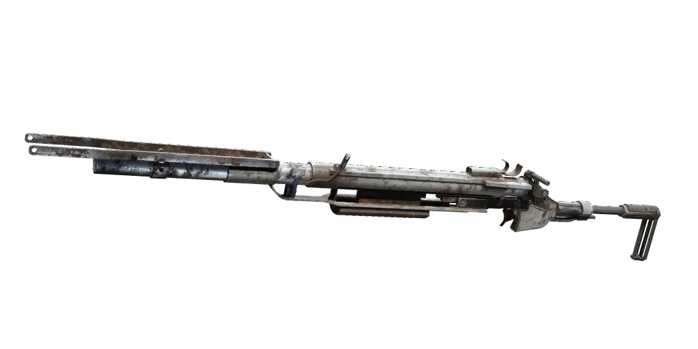

⚡ Heavy Ammo
Uses high-impact heavy ammunition designed to penetrate armor and deal massive damage.
The Ferro is a powerful break-action battle rifle built for high-impact engagements. Designed for durability and precision, it dominates medium to long-range combat scenarios.
Add To CartUses high-impact heavy ammunition designed to penetrate armor and deal massive damage.
Capable of eliminating targets with a single well-placed shot in long-range encounters.
Exceptional accuracy makes the Ferro a reliable weapon for disciplined marksmen.
Simple and durable break-action mechanism that delivers consistent power every shot.
"Best gun you can get off a free loadout."
"For what it costs, it's the best value gun you can get in the game. Strong against PVE and PVP."
"Simple. Reliable. Powerful. Just buy it."

The Ferro is an inexpensive but effective battle rifle designed for medium-to-long range engagements. While its reload speed requires careful timing, its raw power makes it a devastating weapon in skilled hands.
Purchase The Ferro